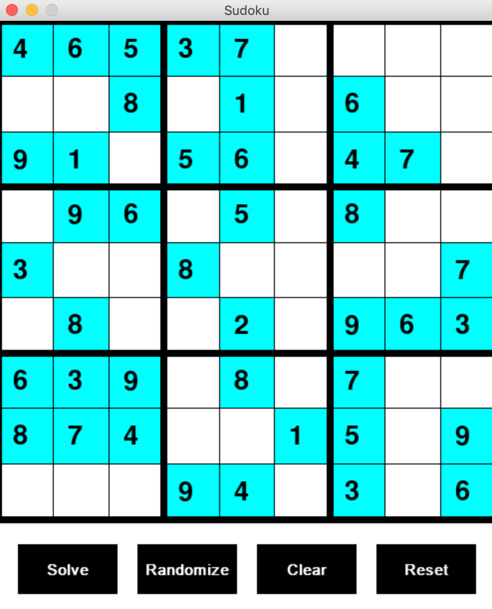
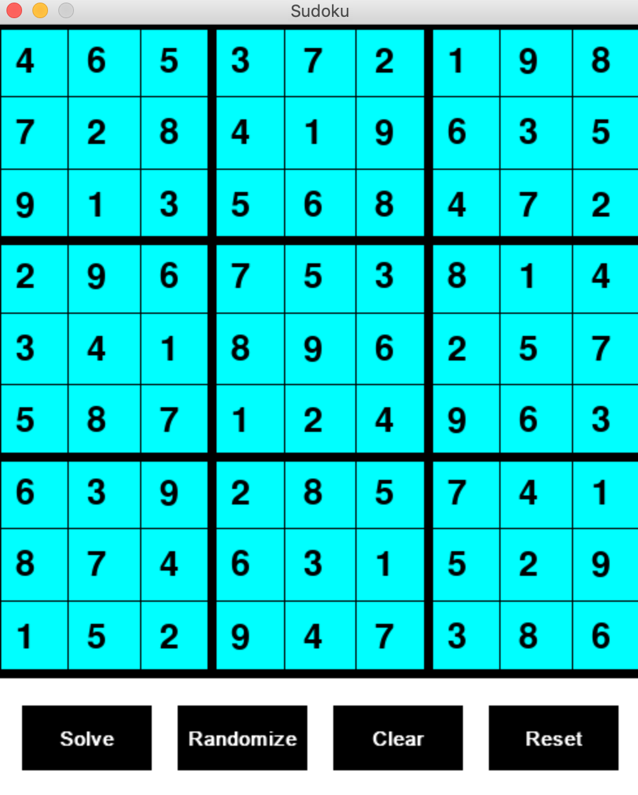

GITHUB LINK: https://github.com/jhartfie/Sudoku
Perfect Sudoku Generator and Solver with GUI
This project represents a comprehensive solution to one of the most beloved puzzles worldwide - Sudoku. Utilizing advanced programming techniques in Python, it features a robust system capable of generating random, solvable Sudoku boards and solving any given Sudoku puzzle using the backtracking algorithm. The inclusion of a graphical user interface (GUI) elevates the project by providing a visual demonstration of the algorithm in action, offering users an insightful and interactive experience.
Dynamic Sudoku Generation:
The generator aspect of this application employs a sophisticated algorithm to produce random, yet solvable, Sudoku boards every time. This ensures a unique challenge for users while demonstrating the power and efficiency of algorithmic generation in creating complex puzzle layouts.
Efficient Problem-Solving with Backtracking:
At the core of the solver functionality is the backtracking algorithm, a tried-and-tested method known for its effectiveness in solving Sudoku puzzles. This project leverages backtracking to methodically explore possible solutions, backtrack when necessary, and ultimately solve the puzzle, regardless of the difficulty level.
The GUI provides a clear and clean interface that not only makes it easy for users to interact with the generator and solver but also visually demonstrates how the backtracking algorithm operates in real-time. Watching the algorithm work through the puzzle-solving process offers both an educational insight into algorithmic thinking and a satisfying visual experience as the solution unfolds.
This Perfect Sudoku Generator and Solver project showcases the seamless integration of complex algorithms with user-friendly interfaces. It stands as a testament to the capabilities of modern programming in creating tools that are not only powerful in function but also engaging and informative for users. The project is a prime example of how technology can transform traditional puzzles into dynamic and interactive experiences.
PICTURES OF SUDOKU:
 